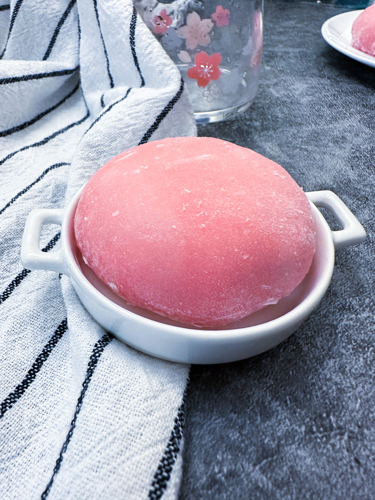

Bungee Mochi Recipe

Inspired by Hunter x Hunter, I’m making Hisoka’s Bungee Gum (Strawberry)
Mochi.
Ingredients
For the Strawberry Jelly:
- 250 g fresh/frozen strawberries I used frozen
- 67.5 g granulated sugar
- 1 tsp lemon juice
For the Whipped Cream
- 250 ml whipping cream
- 1 tsp cornstarch
For the Mochi:
- 120 g Shiratamako glutinous rice flour
- 60 g sugar
- 180 ml water
- red food colouring
Steps
For the Jelly
-
Add all the ingredients to a small saucepan on medium low heat and stir to
prevent burning on the bottom.
- Simmer for 5 mins until thick and soft. Mash slightly.
-
Simmer for 5 more mins until nice and thick, blitz in a food processor until
smooth.
- Let cool completely
For the Whipped Cream:
-
Begin whipping your cream until you reach soft peaks. Mix in the strawberry
jam and the cornstarch.
-
Continue whipping your cream until you have firm peaks but they are not
crumbly. Be careful not to over whip the cream or you’ll end up with butter!
-
Transfer the whipped cream to a container and place in the freezer until
hardened. This will make it easier to wrap. I've made this without freezing
and it's doable, but definitely more difficult.
For the Mochi Dough:
-
In a medium-large microwave-safe bowl, whisk together the shiratamako,
sugar, and water. Whisk until the mixture is smooth and there are no more
clumps remaining. Clean the sides of the bowl by scraping down any residual
batter.
- Cover with plastic wrap and microwave for 2 minutes.
-
Using a spatula, mix the mixture well. Recover with plastic wrap and
microwave for another 1 1/2 minutes.
-
Generously lay down corn starch in a deep dish and pour out the mochi into
it. coat the mochi dough and bench scraper with more cornstarch and separate
into 6-12 pieces (depending on how large you want your mochi).
To assemble
-
Taking a piece of your mochi dough, flatten it into an even round shape
(about 1/4 inch thick). Scoop out about 1 1/2-2 Tbsp of your strawberry
whipped cream filling and place in the middle of the mochi. Wrap the dough
around the cream and pinch the edges together. (If it's too sticky you can
add more corn starch, but you want the edges to stick shut.
-
The mochi is best eaten fresh but it's perfectly delicious to let the
filling reset in the fridge for a bit before serving. They are best enjoyed
within 3 days of making them.
-
It is very important to pull them apart in an over the top and messy way
when you're eating it, just like Bungee Gum! Oh and you have to tell it too!
Enjoy.